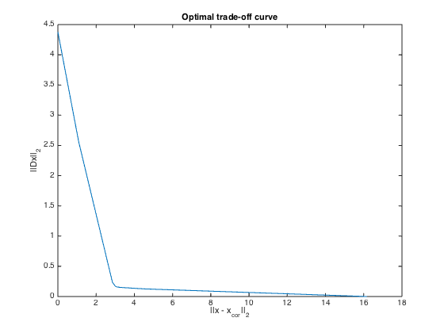

% Section 6.3.3 % Boyd & Vandenberghe "Convex Optimization" % Original by Lieven Vandenberghe % Adapted for CVX Joelle Skaf - 09/29/05 % (a figure is generated) % % Plots the optimal trade-off curve between ||Dx||_2 and ||x-x_cor||_2 by % solving the following problem for different values of delta: % minimize ||x - x_cor||^2 + delta*||Dx||^2 % where x_cor is the a problem parameter, ||Dx|| is a measure of smoothness %Input data randn('state',0); n = 4000; t = (0:n-1)'; exact = 0.5*sin((2*pi/n)*t).*sin(0.01*t); corrupt = exact + 0.05*randn(size(exact)); e = ones(n,1); D = spdiags([-e e], -1:0, n, n); % tradeoff curve nopts = 50; lambdas = logspace(-10,10,nopts); obj1 = zeros(1,nopts); obj2 = zeros(1,nopts); fprintf(1,'Generating the optimal trade-off curve for different values of delta...\n'); for i=1:nopts disp(['* delta = ' num2str(lambdas(i))]); cvx_begin quiet variable x(n) minimize ( norm(x - corrupt) + lambdas(i)*norm(D*x) ) cvx_end obj1(i) = norm(x - corrupt); obj2(i) = norm(D*x); end fprintf(1,'Done! \n'); % Plots plot(obj1, obj2) xlabel('||x - x_{cor}||_2'); ylabel('||Dx||_2'); title('Optimal trade-off curve'); % print -deps smoothrec_tradeoff.eps
Generating the optimal trade-off curve for different values of delta... * delta = 1e-10 * delta = 2.5595e-10 * delta = 6.5513e-10 * delta = 1.6768e-09 * delta = 4.2919e-09 * delta = 1.0985e-08 * delta = 2.8118e-08 * delta = 7.1969e-08 * delta = 1.8421e-07 * delta = 4.7149e-07 * delta = 1.2068e-06 * delta = 3.0888e-06 * delta = 7.906e-06 * delta = 2.0236e-05 * delta = 5.1795e-05 * delta = 0.00013257 * delta = 0.00033932 * delta = 0.00086851 * delta = 0.002223 * delta = 0.0056899 * delta = 0.014563 * delta = 0.037276 * delta = 0.09541 * delta = 0.24421 * delta = 0.62506 * delta = 1.5999 * delta = 4.0949 * delta = 10.4811 * delta = 26.827 * delta = 68.6649 * delta = 175.7511 * delta = 449.8433 * delta = 1151.3954 * delta = 2947.0517 * delta = 7543.1201 * delta = 19306.9773 * delta = 49417.1336 * delta = 126485.5217 * delta = 323745.7543 * delta = 828642.7729 * delta = 2120950.8879 * delta = 5428675.4393 * delta = 13894954.9437 * delta = 35564803.0622 * delta = 91029817.7992 * delta = 232995181.0515 * delta = 596362331.6595 * delta = 1526417967.1752 * delta = 3906939937.0546 * delta = 10000000000 Done!
